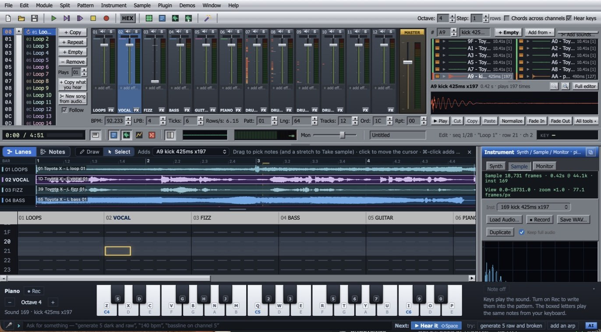
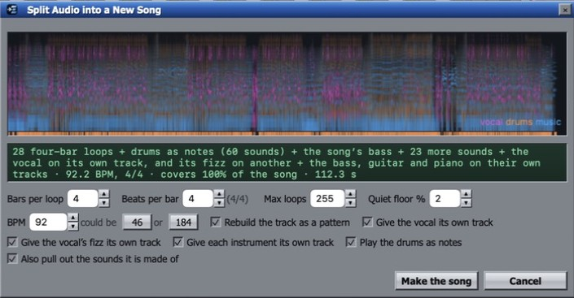

EditLab Tracker
Fix the one part of your AI song that went wrong. Keep the rest.
Drop in a finished song and it comes back as a project you can edit: the vocal, the drums, and the bass, guitar and piano each on a track of its own. Until you change something, it plays back just like the original.
Free to download. Pro is a one-time $24.99 USD, with no subscription.

What you can do with it
- Fix the bar that went wrongSwap it for a clean pass from elsewhere in the song.
- Tame the fizzThe buzzy grain on an AI vocal gets its own track.
- Make an instrumentalMute the vocal. Or solo it for an a cappella.
- Replace one partNew drums or bass under the same vocal.
- Tidy the introCut stray sounds and start clean on the downbeat.
- Make a sample packExport the song's sounds, with Pro.
Works with Claude
Link Tracker to the Claude app and ask in plain words: “take the drums out of the intro”, “make the chorus hit harder”, “balance the mix”. Each change lands in the grid as you watch, and Edit ▸ Undo takes any of them back.
Help ▸ Use EditLab Tracker with Claude… · needs the Claude app for Mac · what Claude sees

The details
- Free: three splits, editing, saving, the demo songs, and Claude.
- Pro, a one-time $24.99 USD: unlimited splits, WAV and M4A export, and sample packs.
- Also a full tracker: pattern grid, piano, sample editor, mixer, effects and automation.
- Needs macOS 14 or later. The vocal and instruments on their own tracks need Apple silicon and macOS 15.
- Private: it runs on your Mac. No account, and Tracker uploads nothing.
Featured in
“Fix the Song, Keep the Spark”, AI Music Newsletter, October 2026.
For reviewers and creators
Email markkaminsky99@gmail.com for a Pro code.